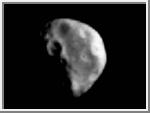
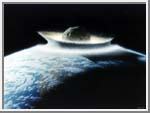
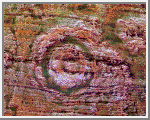
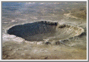
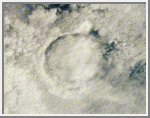
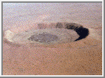
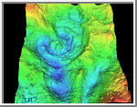
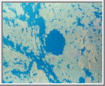

Author sitting on edge of Meteor Crater
May 2004
Circumstances Beyond Our Control
by
Rick Donaldson, NØNJY, CET

Night falls quietly on a tiny Midwestern town, the residents of which are quietly watching television, cooking their supper or relaxing from the day's hard work in the fields. In the large city nearby where several factories produce goods for the region, folks have settled into their evening/night shifts for work. The day shift has gone home for the night. Tomorrow is Saturday. For many it will be a day off of work. A few enterprising folks are preparing their small bass boats for a long day of fishing, starting very early tomorrow morning. A group of Boy Scouts left four hours ago for a trip into the mountains, a couple of hundred miles away, prepared for the weekend camping trip - they should be all set up at their camp site shortly. As silently as the night fell, so too falls the twilight of mankind.
At midnight, Central Daylight Time, a meteor the size of several city blocks hurtles into the atmosphere. Traveling at over twenty-five thousand miles an hour, the giant chunk of rock tears a hole into the atmosphere as it hits. The meteor slows quickly, but not before the massive friction causes the rock to glow, then to boil. The resultant ionized trail of gaseous material can be seen for hundreds of miles and thousands look up at the sudden, unexpected brilliant flash and trail. Two seconds after impacting the atmosphere, the meteor becomes a meteorite, striking the surface of the planet.

In a mere matter of seconds, tomorrow is suddenly upon us, disaster has struck and the hopes, fears and dreams of the entire planet are dashed into oblivion by a random, chance encounter with a rock a few miles across. The twilight of the human race has begun. The rock strikes in the United States, someplace in the south. Perhaps it is Texas, or Oklahoma. It might be along the Mexican border. No matter though, for the ensuing explosion is equivalent to over 5000 megatons... 5,000,000,000 or 5 billion tons of TNT. This is five hundred thousand times larger than the bomb that was dropped on Hiroshima in World War II. The ground for several miles vaporizes. The atmosphere, already ripped through once by the massive shock wave of the passing asteroid now is ripped for a second time. Aircraft within one thousand miles will be thrown from the sky by the second shock wave. For hundreds of miles in all directions the shock wave will radiate outward destroying everything in its path. Buildings, trains, airplanes, people, animals are pummeled to death by the overpressure of the explosion. Almost all man-made structures will be destroyed for hundreds of miles in all directions.
About 3-5 seconds after impact this shockwave will push a large quantity of the atmosphere upward and away from the planet. Vast amounts of the atmosphere will be shoved violently into space, forever lost to the planet. Huge, billowing clouds will form near, above and in all directions around the impact site. Life - as they knew it - within 500 miles will cease to exist in less than ten seconds. Massive lightning storms will develop around the explosion within a few minutes. Anyone caught above ground in this shockwave will be killed by the shock wave, by the ensuing heat wave that follows it, or by flying debris if they are some distance away. None will be alive to see the lightning storms. Within a few seconds of impact, the secondary shock wave on the ground and within the planet will be radiating outward through the entire world. It will be felt almost every place on the planet within moments. The exact numerical rating on the Richter scale will be unreadable in Boulder Colorado, because they haven't calibrated their equipment high enough. The readings will show Boulder's own quakes to be around 9 or 10. This will level homes and buildings throughout Colorado, Kansas, Nebraska, Utah, Oklahoma and Texas.
The tiny little Midwestern town, the city nearby and numerous cities, towns and rural areas become, quite suddenly devoid of life forms of any sort. The combination of the two shockwaves, then the heat wave and finally the earthquakes will pretty much kill any creatures in one or the other of the effects. The amount of debris and smoke thrown into the atmosphere block out the sunlight the next day... and for the next many months. No bright sun shine will be seen for a long time to come. Day and night are difficult to distinguish around the globe. The northern and southern latitudes are spared some of the effects of the smoke and dirt in the air, but everything is hazy and dim for months to come. Plants that survived the hit, due to their distance from the impact point begin to die for lack of sunlight. Animals that depend on plants begin to perish a few days, perhaps as long as a few weeks later. Human beings the world over are overwhelmed by the dust in the air. Many begin to die from respiratory dysfunction of all sorts. Food becomes scarce as the remaining grocery stores are emptied, trucks, trains and ships are stripped of food products. Factories are emptied. Electricity failed in many areas the first couple of days. As the weeks go by, more and more power plants drop off the grid.
Famine, thirst, starvation and death is everywhere. Packs of dogs roam the cities, attacking their once-masters, killing and eating humans as if they were simple prey in the forest of their wolf ancestors. Rats are everywhere. So are bugs, especially roaches around the urban areas. Wild animals that have so far survived the wilderness will begin making their way out of those areas in search of food themselves. Finding little to eat except a few pitiful humans, they will fight the dog packs for the choice pieces of meat. Some will fall to the dogs, some will win. Either way, the humans lose.
The Human Race is losing all the way around. This scenario is but one of the possibilities that might befall the frail ecosystem of this world, or the even frailer society of the human race. Although humans have taken over the planet as the dominate species of the world, we have technology, we think-therefore we are. In truth, we are nothing more than another species of mammals on this world, when it comes to Mother Nature. A disaster such as described above may have been the downfall of the dinosaurs that lived millions of years ago on this world. Their kind survived, according to science for many millennia. The human race has only been here a mere few thousands of years. A tiny moment in geological time.
Peekskill Meteorite Movie (MPG format) (1993). Peekskill Meteorite (996 Kbytes)
In the movie above you see a meteor that flies across half the United States before finally coming to rest in the backside of a car located in New York City. The piece that landed was larger than a grapefruit, but certainly started out larger than a basketball. Perhaps even larger. From the movie you can see that it broke up into several pieces and had a very firery entry into our atmosphere. Rocks of a larger size, hundreds of yards or even miles across would perhaps break up, but would likely remain intact. The force of impact would be like a large nuclear explosion for those close enough to observe the effects.
It is most arrogant of human beings to sit and watch disaster movies at the theater and then wander off home to the security of their homes saying, "That is impossible because... <insert excuse here>". The base truth here, is that we live on a tiny rock in a vast universe. Just imagining the size of the solar system is difficult. Trying to imagine the size of the galaxy is almost impossible for us. To try to see, in our minds the vast, enormous distance the universe covers becomes a mind-bending proposition, driving even the most ardent, logical scientist to God Himself in an attempt to describe that vastness. Looking at it from a purely scientific point of view, not even taking into account the religious implications of thinking and souls and consciousness, one has to consider that this tiny rock is space is nothing more than a sand particle on the beach of the universe.
Living on a grain sand, tends to remind one that along the geological stretch of time, billions of years pass unnoticed in this galaxy of ours. Stars die, stars and planets are born. The distances to the next nearest stars would take humans hundreds of years at current technology and speeds to reach that star. Although it is only about four light years away, as light travels, we would die long before the trip there was over. An asteroid hitting this planet is not as far-fetched as some people want to make it sound. In fact, we are bombarded by particles daily, from space. Some are small as a grain of sand. Others are large as basketballs. There are craters all over the planet that are proof positive that giant rocks have struck this world in it's distant past. The distant past as far as WE humans are concerned. Moments ago, geologically speaking. The following photos show actual craters on the face of the world, that have been created in times past by asteroids and huge meteorites just like in our scenario before. The smallest one (2nd from left) is in Arizona and is 1KM across. The others are all MUCH LARGER.






Author sitting on edge of Meteor
Crater
May 2004
Because our own lifespan is less than one hundred years, we do not understand the concept of time, except as a moment to moment concept. Our idea of "A few thousand years" is diluted by our own penchant to rewrite our history. Even in the past twenty years, we have gone from teaching about the Revolutionary War as a concept that happened in "recent history" to a concept of "that was a LONG time AGO" in our schools. As far as my own memories go, I remember the first Moon landing, Neil Armstrong and Buzz Aldrin. I remember watching Alan Sheppard go up into space for 15 minutes. I remember John Glen orbiting the world several times and splashing down in the ocean. I was a tiny little kid then. My own children don't remember the moon shots. They barely even notice the Space Shuttle these days. Science and technology are routine. Movies show terrible disasters and people live through them. It is very difficult in our day of technological advancement to comprehend the fact that we can not stop an errant piece of space debris from hitting us. We see nuclear weapons, and massive amounts of the Earth's surface changed by ourselves and believe that it is nothing to move a rock in space.
What we fail to realize is the kinetic energy involved as well as the laws of physics. We've heard it said, and in fact it has been shown in a recent movie that it would be possible to stop an incoming comet. But in essence this would be akin to you standing two hundred yards from someone with a gun. He fires a high-powered rifle at you. You THEN get to reach down, pick up your own high powered rifle and fire back. Only thing is, you don't get to shoot the shooter, you must knock his BULLET out of the air. Not an easy feat, huh? Our own technology has us over-confident that our self-same technology will always pull us out of a fix we're in. People that you talk to will say, "Oh, the government will take care of us", or "Heck, we'll just nuke that rock right out of the sky!" While it isn't impossible for us to move, slow down or stop a big chunk of rock from falling on our heads, it is almost as unlikely that in the time we would have from its discovery that we could even mount such an attack.
Science is good. Calculations, nuclear weapons and asteroid trajectories CAN be handled in this day and age. But hese things rely on a couple of important factors. The first factor is that we see the offending piece of rock before it hits us, and that means in plenty of time to actually do something to change its course. The second factor is that we have to be ABLE to do something to change its course, have a space craft, or missiles sitting in various parts of world READY TO GO. If the rock is big enough and time is short, nothing on this world we can do will move an incoming asteroid enough off course to make it miss us. Currently, there are projects working, privately funded, that are attempting to locate Near Earth Objects. But the government does not have funded projects at this point in time. Congress recently listened to authorities on Near Earth Objects, and the hazards they pose. There are several internet sites that will give you some more information regarding objects in space that pass close enough, and are large enough to be serious hazards to the planet, the ecosystem and mankind itself.
One main point throughout this article comes to the
forefront. If this
ever happens, there is little hope for escape for us living here, in
this time. But,
depending on the size of the rock, the location of impact, time of day
of the hit and the
warning we get some people will probably survive. It is toward that
survival that we all
should think. Regardless of the time-space continuum, Star Trek-like
technological
achievements or man-made answers to the cosmos we should be worried
about such things
happening, and most of all that worry should be put into action.
Preparing, teaching and
training for the day when circumstances are beyond our control.
Asteroid Impact and Rogue Rock Information Sources
Asteroid
1997
XF11 (Earth Close-Approach) - Jet Propulsion Labs' own
information regarding the
close approach of 2028
Asteroid
Orbital
Elements Database - A place to get tracking information and other
helpful data.
Astronomical
Headlines -
International Astronomical Union news.
Comet Impact
Simulations -
Sandia Labs
Minor Planet Center
- Responsible
for collecting information, checking calculations, and dissemination of
astrometric
observations.
List Of
The Potentially
Hazardous Asteroids (PHAs) - IAU informational page - Updated
almost daily.
Solar
System Collision
Calculator - Calculate approximate effects of a collision with a
body from space. (Sky
& Telescope).
Spaceguard
Australia -
The search for Near Earth Objects (NEO) - comets, asteroids and
meteoroids (Excellect site
with archived News stories).
The
K-T
Event - The probable extinction of the dinosaurs.
Cretaceous-Tertiary Mass
Extinction event .
credits:
Don Davis Author of Meteor Strike Image
All other images were from NASA web sites.
Article Copyright © 1998-2004 by Rick Donaldson. All rights
reserved.
Revised: 21 Aug 2004